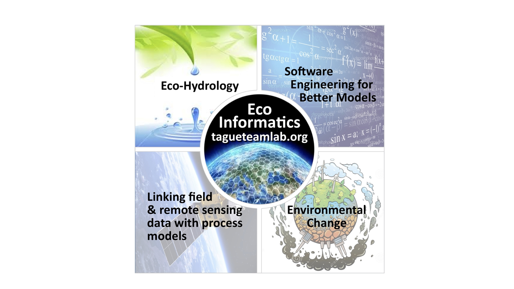

ESM 262 is an introduction to computing for environmental applications. The course provides practical training in software design best practices.
The course features R for programming, Git for version control, Quarto for workflow and editing, and GitHub for collaboration and publishing, but many concepts would be applicable in other software design tools.
Class will include a mix of lectures and hands-on examples, using students’ own computers.
T/TH 8:00 AM - 9:15 AM (Bren Hall 1414)
Teaching Team
Instructor: Naomi Tague (www.tagueteamlab.org)
Teaching assistant: Ojas Sarup
practice partner coding and reproducible workflows
3 BIG concepts in programming are modularity, data structure, repetition - we will learn skills related to all three of these
learn and practice some coding/programming best practices (that will make your data science life easier - whatever you do!)
learn some new Rskills that are helpful for a wide variety of data science applications
R, R-studio
Please bring your laptop to class
All lecture materials will be available on this course website as well as assignments. (But you will submit assignments on Canvas)
Prior to many classes, I will ask you to study an Quarto document (and often an example R-functions) before class Then at the beginning of class, I will briefly go over the document and we will discuss any questions. Occasionally I spend 10-15 minutes lecturing. We will spend most of the class working on practical applications of what was in the document. This way we use the class time as a lab - where you can get guidance.
this mean its essential for you to do the review before class
Why structure it this way? You learn to code by doing - not so much by watching others do!
| # | Date | Type | Topic |
|---|---|---|---|
| 1 | Tue, Apr 14 | Regular | Course overview and setup |
| 2 | Thu, Apr 16 | Regular | Quarto |
| 3 | Tue, Apr 21 | Regular | Git and GitHub |
| 4 | Thu, Apr 23 | Regular | Git and conflicts |
| 5 | Tue, Apr 28 | Regular | APIs and servers |
| 6 | Thu, Apr 30 | Regular | Data Types and Structures, Strings and Dates |
| 7 | Tue, May 5 | Regular | Data structures - Lists |
| 8 | Thu, May 7 | Regular | Loops |
| 9 | Mon, May 11 | Evening | Functions! |
| 10 | Tue, May 12 | Regular | Functions 2 |
| 11 | Thu, May 14 | Regular | Repeating |
| 12 | Mon, May 18 | Evening | Project Design, Modularity and Workflow - Practicing |
| 13 | Tue, May 19 | Regular | Flow Control |
| 14 | Thu, May 21 | Regular | Modular design |
| 15 | Tue, May 26 | Regular | Working with the shell |
| 16 | Thu, May 28 | Regular | Testing and debugging |
| 17 | Tue, Jun 2 | Regular | Documentation |
| 18 | Thu, Jun 4 | Regular | Where does AI fit |
There will be 8 assignments (more or less one for each week). You will usually have time to work on the assignment in class and most will be in groups.
| Week | Name | Assigned | Due date | Group (G) |
|---|---|---|---|---|
| 1 | Quarto Intro | 2025-02-13 | 2025-02-17 | G |
| 2 | Making a function | 2025-02-18 | 2025-02-24 | I |
| 3 | Using Git with your function | 2025-02-25 | 2025-03-03 | I |
| 4 | Looping | 2025-03-4 | 2025-03-10 | I |
| 5 | Functions and testing | 2025-3-11 | 2025-3-18 | G |